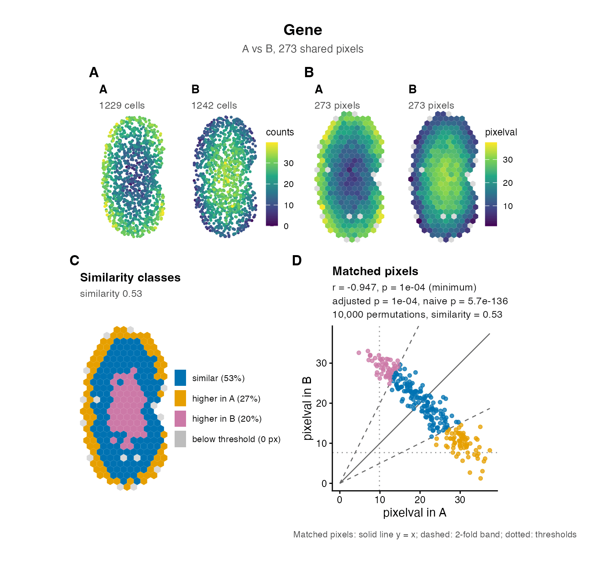

STcompare compares the spatial gene expression patterns of two spatial transcriptomics (ST) datasets of structurally matched tissues, location by location. It finds genes whose spatial pattern differs between, for example, a diseased and a healthy tissue, including differences that a comparison of mean expression misses. The documentation website is jef.works/STcompare.
Overview

Differential gene expression analysis compares mean expression and ignores where a gene is expressed. In the simulated example above, the spatially distinct patterns A and B have the same mean expression, so they are not differentially expressed, while the spatially similar patterns A and C differ in their mean, so they are. STcompare distinguishes these cases with two tests, for every gene:
| Test | Question | Output |
|---|---|---|
| Spatial correlation | Is the spatial pattern of the gene the same in both samples? | Pearson’s correlation over matched locations, with a permutation p-value that accounts for spatial autocorrelation |
| Spatial similarity | Is the expression level the same at matched locations? | The share of matched locations whose values are within a fold change of each other |
The usual test of Pearson’s correlation assumes that observations are independent, but neighbouring locations in a tissue have similar expression, so its p-values are far too small for spatial data. STcompare computes the null distribution from surrogates of each sample that keep its spatial autocorrelation (Viladomat et al. 2014) and the gene’s own distribution of values, with permutations that stop early for genes that are clearly not significant.
STcompare compares the same locations in the two samples, so the samples must be:
Installation
STcompare needs R 4.5 or later. Install it from GitHub with BiocManager, which also installs the Bioconductor packages that STcompare depends on (it uses the remotes package for GitHub):
install.packages(c("BiocManager", "remotes"))
BiocManager::install("JEFworks-Lab/STcompare")STcompare contains C++ code, so the installation needs a C++17 compiler: the Xcode command line tools on macOS (xcode-select --install), Rtools on Windows, or the C++ compiler of your Linux distribution. See Installation for details.
Quick start
This example runs in a few seconds:
library(STcompare)
# three simulated kidneys: A and B have opposite patterns,
# A and C the same pattern at different levels
data(speKidney)
# rasterize the samples together, onto one grid of hexagonal pixels
rast <- SEraster::rasterizeGeneExpression(speKidney, assay_name = "counts",
resolution = 0.2, fun = "mean",
square = FALSE)
# compare A and B: both tests, for every gene
res <- compareSpatial(rast[c("A", "B")], nThreads = 2)
res
# the standard figure of a gene: the cells, the pixels, the similarity
# classes and the matched pixels with the statistics
plotGene(res, "Gene", rast$A, rast$B, native = speKidney[c("A", "B")])The result has one row per gene, with the correlation correlationCoef, its permutation p-value pValuePermute, that p-value adjusted across genes pValuePermuteAdj (the one to call a gene significant), the similarity percentSimilarity, and diagnostics. The columns have the names of the legacy functions; ?compareSpatial and Getting started explain every one of them.
plotGene() draws one figure for a gene, ready to save with ggplot2::ggsave(), and plotOverview(res) the overview of all the genes of a result:

Tutorials and articles
- Getting started with STcompare: both tests on simulated data, how to read the results, and why the permutation p-values are needed.
- Case studies that run the published analyses in a minute or two:
- How STcompare works: the tests step by step.
- Parameters, performance and reproducibility: choosing the settings, run times, threads and seeds.
- Function reference
Citation
citation("STcompare") gives the reference, also in BibTeX:
Kalen Clifton, Vivien Jiang, Rafael dos Santos Peixoto, Srujan Singh, Ryo Matsuura, Hamid Rabb, Jean Fan, STcompare: comparative spatial transcriptomics data analysis of structurally matched tissues to characterize differentially spatially patterned genes, Bioinformatics, Volume 42, Issue 9, September 2026, btag644, https://doi.org/10.1093/bioinformatics/btag644
The spatial correlation test builds on Júlia Viladomat, Rahul Mazumder, Alex McInturff, Douglas J. McCauley, Trevor Hastie, Assessing the significance of global and local correlations under spatial autocorrelation: a nonparametric approach, Biometrics, Volume 70, Issue 2, June 2014, Pages 409-418, https://doi.org/10.1111/biom.12139
Getting help
Please report bugs and ask questions on the issue tracker.